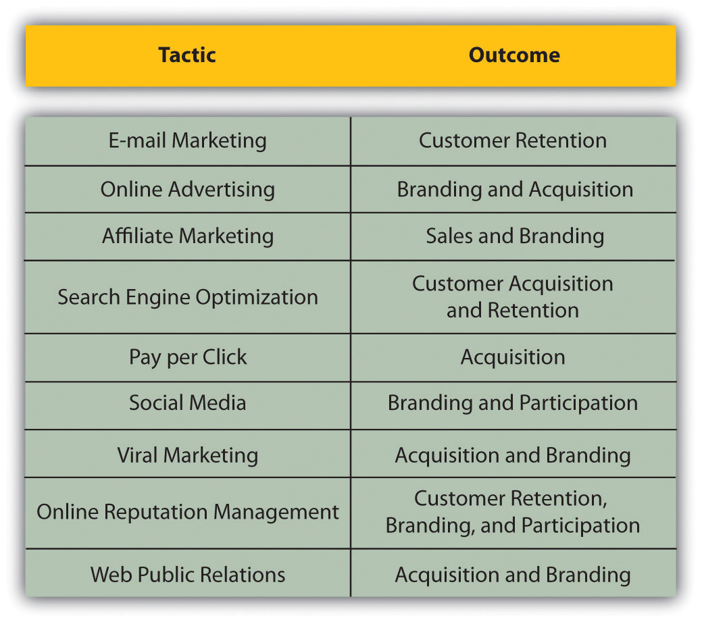

eMarketing refers specifically to marketing using the Internet, but holistic strategies allow companies to make the most of their budget through integrating online and offline activities. eMarketing should not be seen as separate or an afterthought to a marketing strategy. Instead, businesses should focus on their customers and use the channels most likely to reach their target market based on budget.
The cornerstone of a successful eMarketing strategy is flexibility. With near real-time reporting, the likely success of any campaign or channel can be gauged quickly. Flexibility allows for focus to be shifted as new opportunities and challenges arise.
Figure 19.6 eMarketing Tactics and Their Outcomes
Many tools exist that allow an organization to gather information related to its business and those of competitors. These same tools also prove invaluable for market research, especially when keywords that are monitored are chosen to reflect industry trends.
When researching competitors, never forget the basics: visit their Web sites. Not only can you gather basic price and product information, but it also can be relatively easy to discover information about their marketing initiatives such as affiliate marketing.